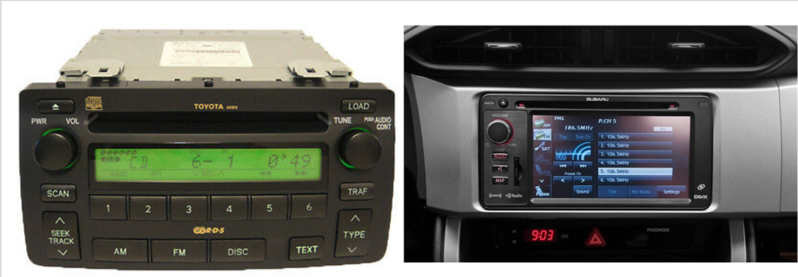

Laws of UI Design example - Jakob's Law

One small example of Jakob's Law can be seen in the interface of old car radios and newer car entertainment centers. Back when I had a 2008 Toyota Corolla, I had to endure only having a
radio & CD interface, no auxilary cable or bluetooth connectivity. This radio's interface is pictured on the left. I found myself getting use to the radio interface over the years, and learned that the long press on one of the numbered buttons
would set that station into the number's "memory". Once I got a newer car, I had to learn the new entertainment interface, to my pleasure, I found that setting the station into memory was the same
action, the long press.